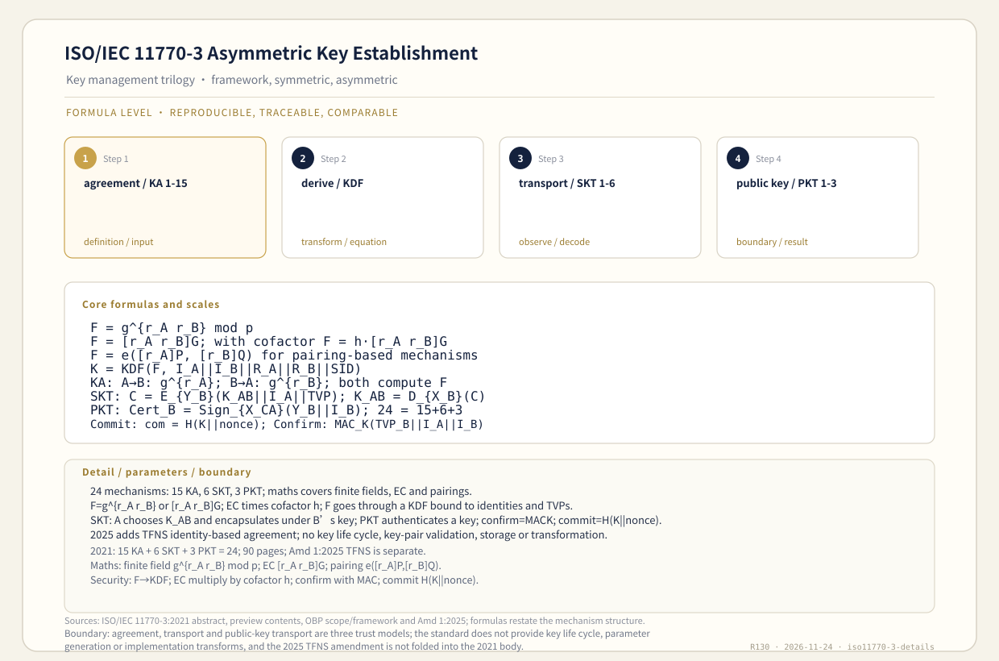
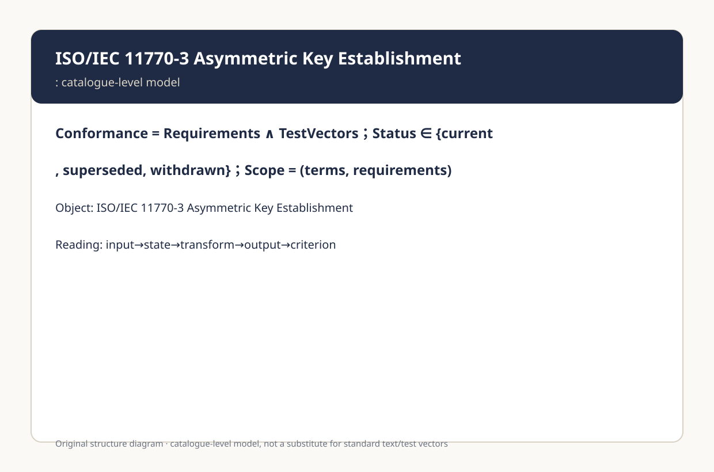

Principles
Standard: Key management — Part 3: Mechanisms using asymmetric techniques (非对称技术密钥管理). ISO/IEC 11770-3:2021 divides asymmetric key management into three classes: 15 key-agreement (KA), 6 secret-key-transport (SKT) and 3 public-key-transport (PKT) mechanisms, 24 in total. Key agreement has both parties exchange data and jointly compute a shared value F that neither can predetermine; secret-key transport has A choose K_AB and encapsulate it under B’s public key; public-key transport authenticates a public key without requiring secrecy. The mathematics covers finite fields, elliptic curves and bilinear pairings. A finite field uses F=g^{r_A r_B} mod p; an elliptic curve uses F=[r_A r_B]G, multiplied by cofactor h when the curve has one; pairing mechanisms use e([r_A]P,[r_B]Q). F is not the session key: it must pass through a KDF bound to identities, random numbers, TVPs and SID to produce K. The standard also discusses key confirmation (a MAC proving possession of the same K) and key commitment (H(K||nonce) to resist unknown-key sharing). The 2025 amendment adds TFNS identity-based key agreement, while the 24 mechanisms of the 2021 body remain unchanged. A compact notation is K=KDF(F, context), with context=(I_A,I_B,R_A,R_B,SID,purpose). If one context field is missing, the protocol may reuse a key across sessions or accept unknown-key sharing.

Why it matters
The three mechanisms are not synonyms. Key agreement depends on both private keys and the exchanged messages, and neither party can predetermine K; secret-key transport depends on B’s public key and decryption capability, so A can choose K but B must trust the encapsulation; public-key transport only answers “who owns this public key” and does not provide confidentiality.
A KDF is not decoration: raw F may be biased or not uniformly random, and using it directly as a key leaves distribution problems; binding identities and TVPs into the KDF blocks unknown-key sharing and cross-session replay. EC cofactor multiplication maps the point into the correct subgroup; omitting it opens small-subgroup attacks.
The formula-level value is stating which mechanism class, which group operation and which binding layer are used, not collapsing 24 mechanisms into “asymmetric key exchange”.
Applications
Selection: use KA when both parties must contribute and neither may predetermine K; use SKT when A must control the key value; use PKT when only public-key ownership needs authentication. Then choose the group: finite field, elliptic curve or pairing; pairing mechanisms also require checking the PKG/trusted centre and key escrow.
Implementation order: validate domain parameters and public keys; generate the private key and compute the public key; exchange or encapsulate; compute F; multiply by the EC cofactor; run the KDF with I_A/I_B/TVP/SID/purpose; perform key confirmation; add key commitment when needed.
Engineering checks: is the RNG fit for purpose; is the private key in a protected environment; is the certificate chain verified; is the KDF a standard one; is F used directly as a key; is the cofactor missing; is confirmation one-way only; are SID and purpose recorded.
A shared name may belong to an algorithm, standard, event, person or term; this entry is responsible only for its catalogue binding and does not absorb adjacent records. If versions, regions or institutions define the name differently, the differences stay side by side.

Limits & attacks
The standard does not cover key life cycle, key-pair generation/validation, storage, archiving or destruction, and does not specify transformations. It does not guarantee implementation security; side channels, fault injection and RNG failure are outside it.
Unauthenticated DH is exposed to man-in-the-middle; an EC implementation that omits the cofactor is exposed to small-subgroup attacks; a KDF without identity/TVP binding is exposed to unknown-key sharing; one-way confirmation or no commitment can let one party accept an unknown key. Pairing mechanisms also face PKG escrow and pairing-parameter choices.
The 2025 TFNS amendment is an added mechanism, not a revision of the 2021 body; do not turn 24 into 25 without stating the version.
History
Part 3 appeared in 1999, was revised in 2008 and 2015; Amd 1:2017 added blinded Diffie-Hellman, which the 2021 fourth edition folded into the 90-page body with 24 mechanisms; Amd 1:2025, published in April 2025, added TFNS identity-based key agreement.
Worked example & verification
Formal model and reproduction steps
[S=\min_i S_i,\quad S_i\in{\text{密钥强度},\text{分组安全},\text{实现安全}}]
Key management — Part 3: Mechanisms using asymmetric techniques: the registered public parameters, key material or randomness, and message are mapped through the stated transformation to an output checked against the registered criterion. The worked example is a structural reproduction, not a new test vector; parameter ranges, standard versions and implementation details remain source-bound.
References
- Wikipedia search entry for 非对称技术密钥管理. https://zh.wikipedia.org/w/index.php?search=%E9%9D%9E%E5%AF%B9%E7%A7%B0%E6%8A%80%E6%9C%AF%E5%AF%86%E9%92%A5%E7%AE%A1%E7%90%86
- Handbook of Applied Cryptography (Menezes, van Oorschot, Vanstone). https://www.cacr.math.uwaterloo.ca/hac/